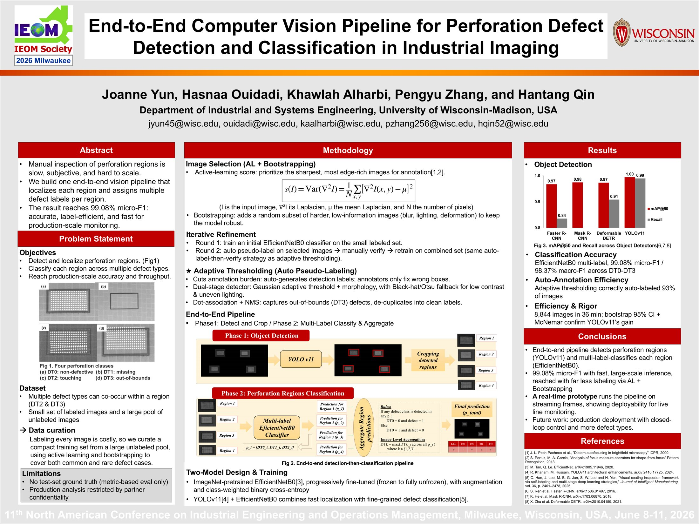
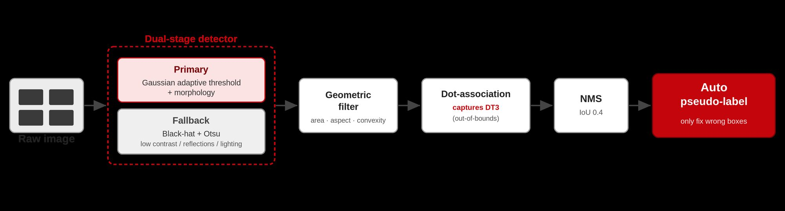
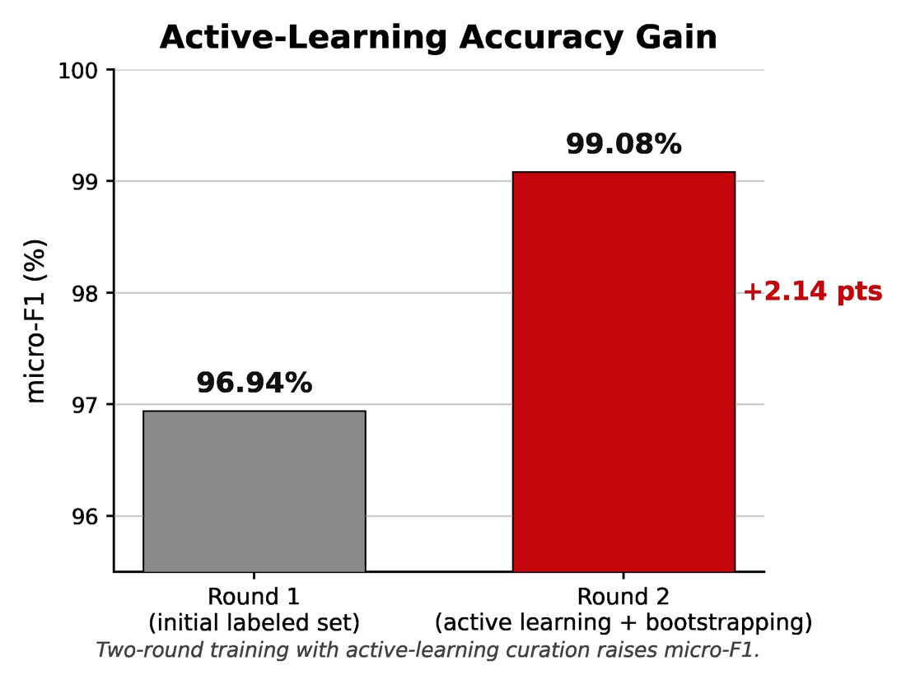

An industry partner had about 25,000 unlabeled images of perforated material and needed defects found and classified automatically. Hand-labeling all of them was not an option, so most of the work went into deciding which images to label and how to label the rest automatically.

What I did
- Co-led the defect-inspection research and designed an annotation strategy of roughly 900 images (informative plus random samples) out of 25,000.
- Co-wrote the sampling and pseudo-labeling methods for the manuscript, and evaluated the adaptive-thresholding pseudo-labeler with component ablations and a six-parameter sensitivity analysis.
- Under a center-based localization metric, the pipeline located 93.4% of 852 regions across 213 images with 18 false boxes.
- Reconstructed the Faster R-CNN training pipeline, reaching 85.0% AP / 97.6% AP50 on 178 validation images.


Recognition: 3rd of 33 teams, IISE QCRE Data Challenge 2026 · 2nd Place, IEOM Senior Capstone Design Competition 2026